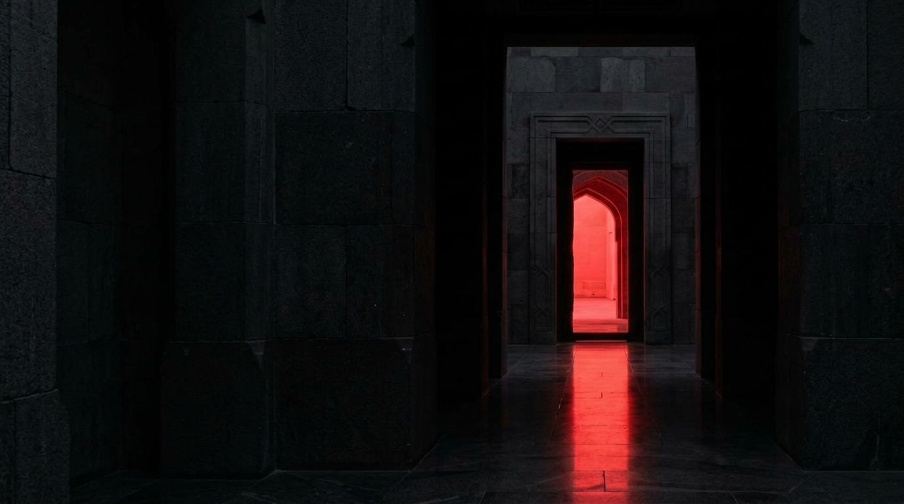

Season 0 · live
Fund a bounty, or ship the code that gets one paid. Every point is read straight from GIWA Chain, and nobody can edit the table, us included.
Testnet ETH. Nothing to buy.

Pay on merge · GIWA Sepolia
Developer bounties locked on GIWA Chain. An agent checks that the pull request is merged and its tests pass, then the escrow pays. No committee in between.
01 · The problem
Every ecosystem knows it needs developers. Almost none can pay them for shipped work without friction, and a new chain lives or dies by the builders it attracts.
Slow
Grant rounds, review queues, multisig sign-offs. The work ships today and the payment arrives next quarter.
Manual
People read applications, not code. Review is subjective and does not scale with the ecosystem.
Farmable
Identity filters fail. Fake accounts and recycled repositories capture funds meant for real builders.
02 · The real run
Lock a bounty on-chain. When the pull request is merged and its tests pass, the agent verifies it from GitHub and the escrow pays the developer. Nobody signs off. Nobody chases a payment.
What you see here is not a mockup. It is the replay of what happened to mergit-demo#2 on 19 September 2026, with the amounts, hashes and transaction read from GIWA Sepolia.
03 · How it works
The agent lives inside GitHub Actions and checks the merge and the CI. The money stays in the contract until the verifier releases it, or until the funder takes it back after the deadline.
A protocol posts a bounty and the reward is locked in the contract on GIWA. It stays there until the verifier releases it. If nobody is paid by the deadline, the funder takes it back.
A developer ships the work the normal way: a pull request, reviewed and merged by the maintainers.
Every merge wakes the agent. It reads the pull request through the GitHub API and hashes exactly what it saw.
If both conditions hold, the escrow pays the author's registered wallet and records the evidence hash on-chain.
04 · Why GIWA
Ecosystem
GIWA is an Ethereum L2 on the OP Stack, in partnership with the Optimism Foundation, the ecosystem that pioneered retroactive builder funding. Mergit brings that idea to GIWA, automated.
Timing
Mergit turns funding into shipped code that lands on GIWA, instead of into applications. Low OP Stack fees make even small bounties viable.
Synergy
GIWA already invests in builders, manually. Route part of that through Mergit and every payout becomes on-chain activity from a real builder, on GIWA.
05 · Roadmap
Each step is a commit on the same branch. The red one is where the project stands today.
Now · live on testnet
Next · the protocol
Then · builder reputation
Exploring · subject to regulation
MergitEscrow · 0xffcf…5879, verified on GIWA Sepolia ↗ · 14 tests · solc 0.8.24 · no owner, no pause, no upgrade.